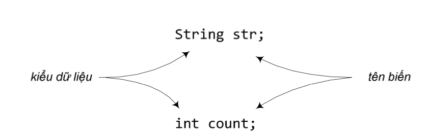

Trong các ví dụ ở các chương trước, ta đã gặp các biến được sử dụng ở hai môi trường: (1) biến thực thể là trạng thái của đối tượng, và (2) biến địa phương là biến được khai báo bên trong một phương thức. Sau này, ta sẽ dùng biến ở dạng đối số (các giá trị được truyền vào trong phương thức bởi lời gọi phương thức), và ở dạng giá trị trả về (giá trị do phương thức trả về cho nơi gọi nó). Ta đã gặp các biến được khai báo với kiểu dữ liệu cơ bản, ví dụ kiểu int, và các biến được khai báo thuộc kiểu đối tượng như String, Cow, PhoneBookAddress. Trong chương này, ta sẽ mô tả kĩ về các loại biến của Java, cách khai báo và sử dụng biến.
Java là ngôn ngữ định kiểu mạnh (strongly-typed language). Nghĩa là, biến nào cũng có kiểu dữ liệu xác định và phải được khai báo trước khi sử dụng. Trình biên dịch không cho phép gán một giá trị kiểu Cow vào một biến kiểu String, chuyện gì xảy ra nếu ta gọi phương thức length() của biến String đó để lấy độ dài xâu kí tự? Java cũng không cho phép gán một giá trị kiểu số thực với dấu chấm động (chẳng hạn float) vào một biến kiểu số nguyên (chẳng hạn int), trình biên dịch sẽ phát hiện và báo lỗi. Ta phải dùng phép đổi kiểu một cách tường minh để làm việc này, biết rằng việc đó có thể làm giảm độ chính xác của giá trị.
Các kiểu dữ liệu của Java được chia thành hai loại: dữ liệu cơ bản (primitive) và tham chiếu đối tượng (object reference).
Các kiểu dữ liệu cơ bản dành cho các giá trị cơ bản như các số hay các kí tự. Ví dụ như các kiểu char (kí tự), int. Còn các tham chiếu đối tượng là các tham chiếu tới đối tượng. Nghe có vẻ không rõ ràng hơn được chút nào, nhưng ta sẽ quay lại khái niệm "tham chiếu" này sau (nếu ta đã biết về C/C++ thì khái niệm này gần giống với con trỏ tới đối tượng). Nhưng dù thuộc loại dữ liệu nào, mỗi biến đều cần có một cái tên và thuộc một kiểu dữ liệu cụ thể. Khi ta nói một đối tượng thuộc lớp X, điều đó cũng có ý rằng đối tượng đó thuộc kiểu dữ liệu X.
Hình 4.1. Mỗi biến cần có một kiểu dữ liệu và một cái tên